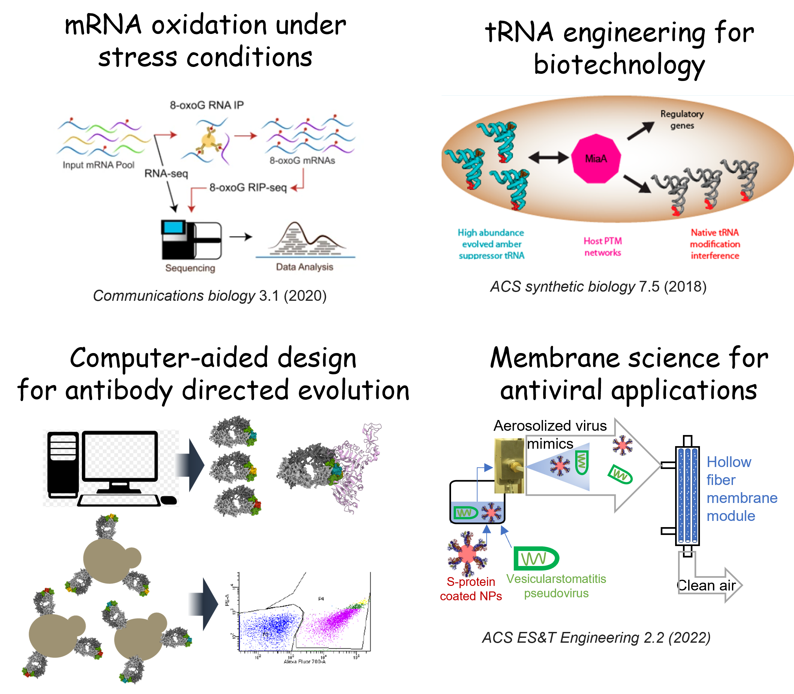

For most of my career in research, I've focused on advancing technology at the interface of engineering and biology. Whether I'm developing new approaches that leverage big data and high performance computing to uncover how air pollution affects health through RNA biochemistry, or pioneering the use of advanced hollow fiber membranes to fight the airborne spread of COVID-19, I bring my engineering mindset to the table for creatively solving problems in biology & biochemistry.